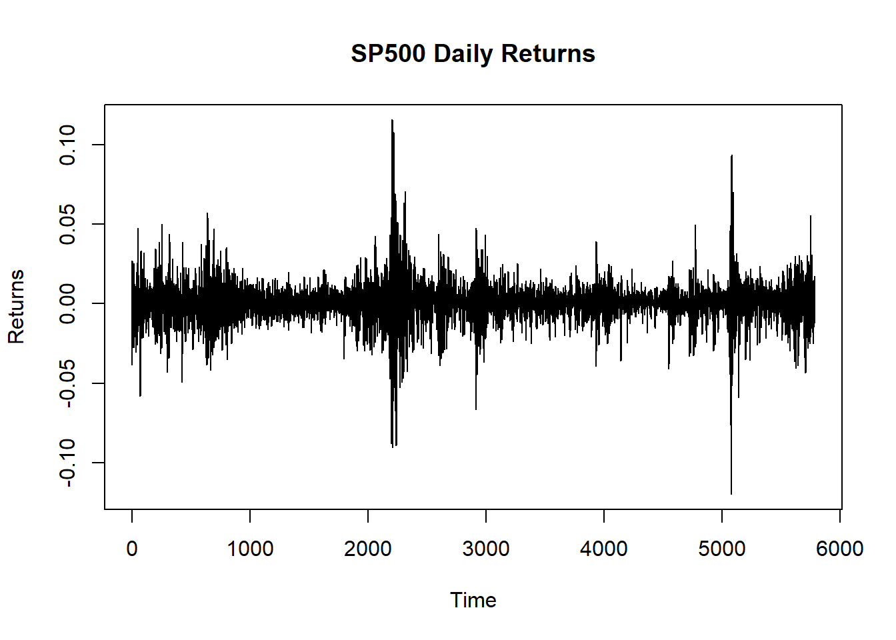

This project is a reproduction and hopefully an extension of ARIMA Time Series Forecasting - S&P 500 Stock by Yassine Sfaihi. The aim of the research is to verify whether the S&P 500 market price can be acurately forecasted using conventional time series analysis tools. In the extension of the project, the ARIMA model will be compared with a much more advanced machine learning technique - neural networks.
Introduction
Time series forecasting is a very attractive idea for researchers, especially in the context of forecasting financial asset prices. However, for centuries mathematicians and scholars who attempted such thing almost always have failed, leading many to believe that market returns are a white noise - a completely random time series.
Data
Metodology
We used the ggplot2 package to visually examine the stationarity of the time series. We plotted the prices and returns of sp500 and based on our visual analysis, we concluded that the price time series is non-stationary, while the returns time series is stationarity. In addition, we also conducted an Augmented Dickey-Fuller (ADF) test to confirm the aforementioned observations. The ADF test provided further evidence supporting our conclusions, indicating that the price time series is indeed non-stationary, while the returns time series is stationary.
df <-na.omit(df)df$Date <-as.Date(df$Date)p1 <-ggplot(df, aes(x = Date)) +geom_line(aes(y = GSPC.Open, color ="Price"), size =1) +geom_line(aes(y = GSPC.High, color ="Price"), size =1) +geom_line(aes(y = GSPC.Low, color ="Price"), size =1) +geom_line(aes(y = GSPC.Close, color ="Price"), size =1) +labs(x ="Date", y ="Price", color ="Price") +scale_color_manual(values =c("Price"="purple")) +theme_minimal()
Warning: Using `size` aesthetic for lines was deprecated in ggplot2 3.4.0.
ℹ Please use `linewidth` instead.
#Calc of returns closing_prices <- df$GSPC.Closereturns <-diff(closing_prices) /lag(closing_prices)
Warning in diff(closing_prices)/lag(closing_prices): długość dłuszego obiektu
nie jest wielokrotnością długości krótszego obiektu
adf_result <-adf.test(returns, alternative ="stationary")
Warning in adf.test(returns, alternative = "stationary"): p-value smaller than
printed p-value
cat("ADF Statistic:", adf_result$statistic, "\n")
ADF Statistic: -18.47379
cat("p-value:", adf_result$p.value, "\n")
p-value: 0.01
time_index <-time(closing_prices)[-1]# Remove missing values from time_index and returnscomplete_data <-!is.na(time_index) &!is.na(returns)
Warning in !is.na(time_index) & !is.na(returns): długość dłuszego obiektu nie
jest wielokrotnością długości krótszego obiektu
time_index <- time_index[complete_data]returns <- returns[complete_data]plot(time_index, returns, type ="l", xlab ="Time", ylab ="Returns", main ="SP500 Daily Returns")

dfret <-data.frame(Date =as.Date(time_index), Returns = returns)# Convert the Date column to a proper date formatdfret$Date <-as.Date(dfret$Date)# Remove rows with NA, NaN, or Inf in the Date or Returns columnsdfret <- dfret[complete.cases(dfret$Date, dfret$Returns), ]# Create the xts objectxts_obj <-xts(dfret$Returns, order.by = dfret$Date)# Rename a column in an xts objectcolnames(xts_obj)[1] <-"Return"# Define the p, d, and q parameters to take any value between 0 and 2p <- d <- q <-0:2# Generate all different combinations of p, d, and q tripletspdq <-expand.grid(p = p, d = d, q = q)# Perform a grid search to find the optimal set of parameters that yields the best performancebest_aic <-Infbest_pdq <-c(NA, NA, NA)for(i in1:nrow(pdq)) { model <-arima(xts_obj, order =c(pdq[i, "p"], pdq[i, "d"], pdq[i, "q"]))if(AIC(model) < best_aic) { best_aic <-AIC(model) best_pdq <- pdq[i, ] }}cat("Best model AIC:", best_aic,"\n")
Best model AIC: -34345.04
# Split the data into train and test setstrain_data <- xts_obj[1:floor(length(xts_obj)*0.8)]test_data <- xts_obj[(floor(length(xts_obj)*0.8) +1):length(xts_obj)]model <-arima(train_data, order =c(best_pdq[1, "p"], best_pdq[1, "d"], best_pdq[1, "q"]))# Use the model to make predictions on the test datapredictions <-forecast(model, h =length(test_data))# Plot the predictions against the actual values#dfactvspred <- data.frame(Date = index(test_data), Actual = coredata(test_data), predictions = as.numeric(predictions$fitted))# Plot the actual values and predictions#plot(test_data, main = "Actual vs Predictions", ylab = "Value")#lines(dfactvspred$predictions, col = "red")#legend("topleft", legend = c("Actual", "Predictions"), col = c("black", "red"), lty = 1)
Results
Comparing ARIMA with an LSTM model
As noticed above, the ARIMA model is a good benchmark and an initial analysis tool, but it does not posses a lot of predictive power. A better alternative to the ARIMA model which is a simple machine learning model, would be the LSTM model which stands for Long Short-Term Memory and is a neural network that has shown effective in predicting time series like price data.
# Scale the data to values from 0 to 1max_val <-max(df$GSPC.Adjusted)min_val <-min(df$GSPC.Adjusted)scaled_data <- (df$GSPC.Adjusted - min_val) / (max_val - min_val)
# Define function that will be used to generate input data sequencesdata_sequence <-function(data, sl) { result_x =list() result_y =list()for(i in1:(length(data)-sl)) { result_x[[i]] <- data[i:(i+sl-1)] result_y[[i]] <- data[(i+sl)] } x <-array_reshape(unlist(result_x), dim =c(length(result_x), sl, 1)) y <-unlist(result_y)list("x"= x, "y"= y)}
# Compile the modelmodel %>%compile(optimizer =optimizer_adam(learning_rate =0.001),loss ="mse")
Thus we have achieved a model with a MSE of 0.000555671 which is quite impressive. But let’s evaluate the model’s accuracy and test it’s out-of-sample performance.
# Plot the true and predicted valuesggplot(results, aes(Day)) +geom_line(aes(y = Actual, colour ="Actual")) +geom_line(aes(y = Predicted, colour ="Predicted")) +labs(x ="Day", y ="Closing Price", colour ="Legend", title ="Actual and Predicted S&P500 Index")